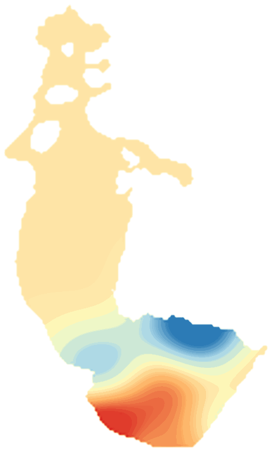

LakeScope › FL
Lake Tohopekaliga today
Updated 2026-11-21 - Atlas Labs
Some algae possible, 60°F water, level steady, near normal, calm this morning.
Water level
54.76 ft
U.S. Army Corps of Engineers - 2026-11-21
7-day trend: steady (+0.07 ft). Compared with normal for this date: -0.2 ft (same weeks, 2021-2025).
Water clarity and algae
Some algae possible Last clear view: about a week ago.
Surface temperature
60°F
seen from space on 2026-11-19

Weather, next 3 days
| Day | Sky | High / low | Wind | Rain |
|---|---|---|---|---|
| Saturday | Chance Rain Showers | 78 / 68°F | 10 mph SSW | 38% |
| Sunday | Mostly Sunny | 77 / 64°F | 10 mph WSW | 9% |
| Monday | Partly Sunny | 74 / 65°F | 5 mph NNW | 0% |
Sunrise 06:52 - sunset 17:30 - Waxing gibbous. National Weather Service.
Get the LakeScope app: alerts and the 3-D view of Lake Tohopekaliga